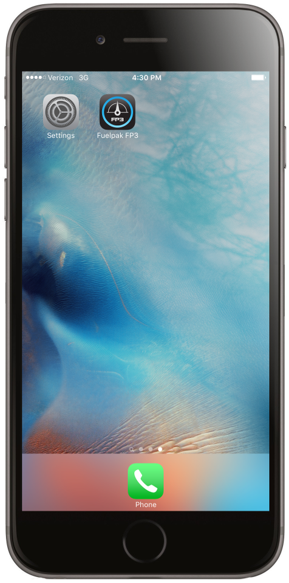
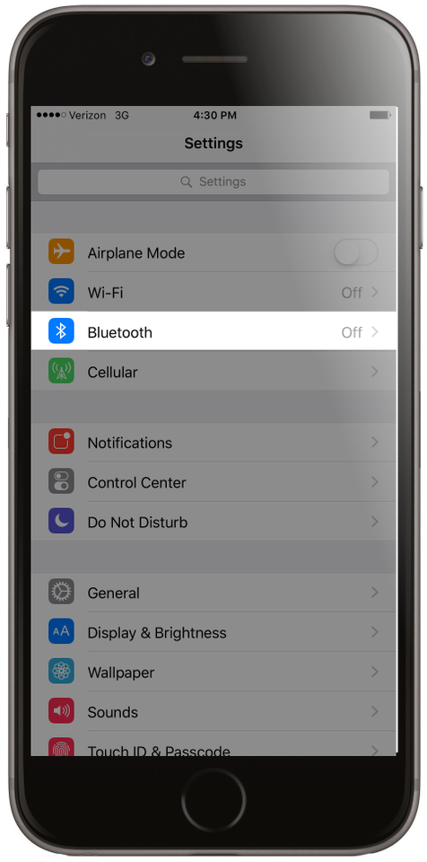
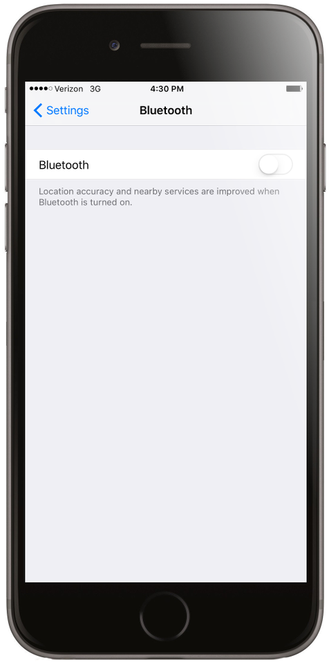
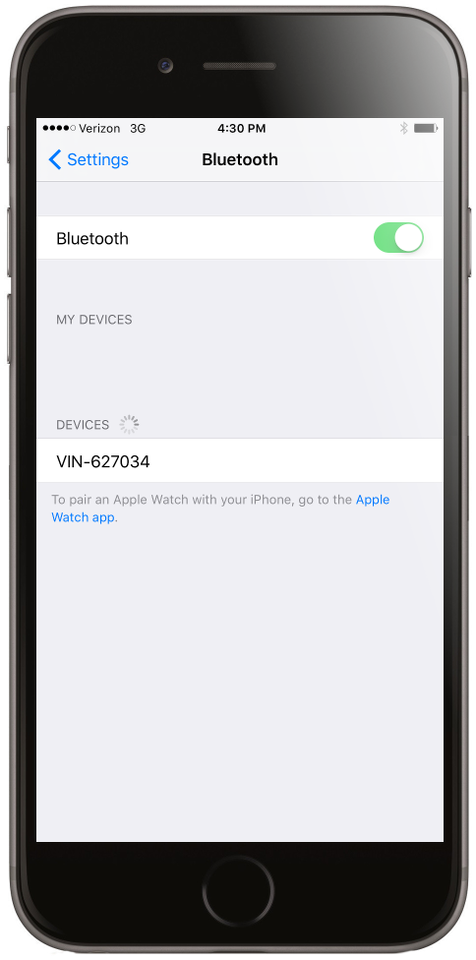

Pairing Bluetooth
1. Install FP3 into your bike's diagnostic port.

2. Turn on the bike's main power switch.

3. After a couple seconds, one LED will be flashing slowly.

4. On your iOS device, go to settings.
5. Select Bluetooth.
6. Turn on Bluetooth (If it isn't already on). Find your bike in the drop down of available devices and select it.

7. Once connected, go to the FP3 app. The app should now recognize the Fuelpak hardware connected to your bike.